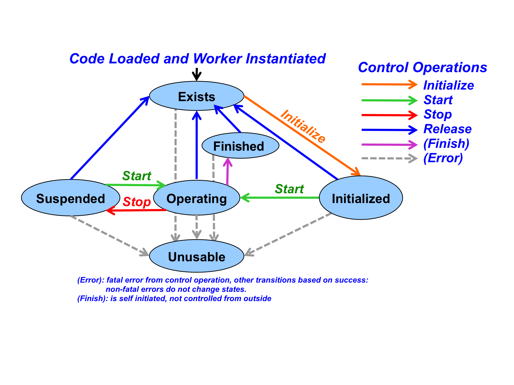

OpenCPI
Component Development Guide
DRAFT
Revision History
|
Revision |
Description of Change |
Date |
|
1.01 |
Creation |
2010-06-21 |
|
1.02 |
Add ocpisca information and HDL application information |
2010-08-05 |
|
1.03 |
Add more detail to HDL building, and general editorial improvements |
2011-03-28 |
|
1.1 |
Editing, platform and device aspects of ocpigen, HDL details |
2011-08-01 |
|
1.2 |
Update for latest HDL details |
2013-03-12 |
|
1.3 |
Rename document, add VHDL coding details and ocpihdl utility |
2013-06-15 |
|
1.4 |
Add new and complete assembly and container info, and add two new ocpihdl functions |
2013-11-06 |
|
1.5 |
HDL coding practices, more HDL platform information |
2013-12-10 |
|
1.6 |
Convert to ODT format, add more clarity for parameter properties and readonly properties |
2014-03-31 |
|
1.7 |
Use standard template., minor updates, add generic OWD content. |
2015-02-27 |
|
1.8 |
Incorporate the authoring model reference content into this document |
2015-10-31 |
|
1.9 |
New section on projects, removed the HDL content to a different doc, removed authors cleaned up and refreshed all content. |
2016-01-11 |
Table of Contents
2 Overview
3 Worker Development Introduction
4.1 Requirements for all authoring models
4.2 Control Plane Introduction
5 Component Specifications (in OCS XML files)
5.1 ComponentSpec top-level element
5.2 Properties element of ComponentSpec elements
5.3 Property element of ComponentSpec or Properties elements
5.4 Port element of ComponentSpec elements
6 Property Value Syntax and Ranges
6.1 Values of unsigned integer types: uchar, ushort, ulong, ulonglong
6.2 Values of signed integer types: short, long, longlong
6.4 Values of the types: float and double
6.6 Values of the type: string
6.9 Values in multidimensional types
7 Protocol Specifications (in OPS XML files)
7.1 Protocol element as top level element.
7.2 Protocol Specification (OPS) examples
8 Worker Descriptions (in OWD XML files)
8.1 XML Attributes of the top-level XYZWorker element.
8.2 Property and SpecProperty child elements in the OWD
8.3 Built-in parameters of all workers
8.4 Port Elements of XYZWorker elements
9.1 Parameter Properties in Worker Makefiles
9.2 Specifying Parameters using Build Configuration XML files
10.1 How Parameter Value Settings Appear in Source Code.
11.1 The Component Library Makefile
11.2 Library Exports
12.1 Creating Workers
12.2 Editing Workers
12.3 Building Workers
13 Developing OpenCPI Assets in Projects
13.2 Project Makefiles
13.3 The Project.mk File for project-wide variable settings
13.4 Project Exports
13.5 Using projects from outside the project
14 The ocpidev tool for managing assets
15 Environment Variables used in Component Development
This document also refers to concepts and definitions in other documents, but does not depend on them.
Table 1: References to Related Documents
|
Title |
Published By |
Link |
|
OpenCPI Technical Summary |
Public URL: https://github.com/opencpi/openpci/raw/master/doc/old/OpenCPI_Technical_Summary.pdf |
|
|
OpenCPI RCC Development Guide |
Public URL: https://github.com/opencpi/opencpi/doc/pdf/OpenCPI_RCC_Development.pdf |
|
|
OpenCPI HDL Development Guide |
Public URL: https://github.com/opencpi/opencpi/raw/master/doc/HDL_Development_Guide.pdf |
|
|
OpenCPI Application Development Guide |
Public URL: https://github.com/opencpi/opencpi/raw/master/doc/Application_Development_Guide.pdf |
This document describes how to create OpenCPI component implementations ( workers) in a component library, so that they are available for OpenCPI application developers and users. It introduces a kit of tools to specify and develop OpenCPI workers in any supported authoring model language and API. It also describes how to create, build, and manage libraries of heterogeneous components where the components may have multiple implementations.
This document describes tools and processes to development component libraries in general, other documents describe the process of developing workers for specific authoring models, which currently include Resource-constrained C Language workers RCC (C and C++ workers for software targets), Hardware Description Lanaguage workers HDL (VHDL or Verilog workers for FPGAs), and OpenCL workers, OCL (OpenCL workers for GPUs).
References to the set of tools, scripts, documents and libraries used for developing components and workers in libraries are part of the: OpenCPI Component Development Kit (CDK). The CDK is not an integrated development environment (IDE), but rather is a set of commands, make and shell level tools, and scripts that support the development process. The CDK relies on several conventional tools, including GNU Make, and other basic POSIX command-line tools.
The CDK also includes tools specific to OpenCPI that support heterogeneous code generation and component testing. These tools are usually used indirectly, using the provided makefile scripts to build component libraries of workers (heterogeneous implementations), and, when applicable, building workers in each of the available authoring models.
The OpenCPI CDK relies on technology-specific compilers (e.g. gcc), synthesis (for FPGAs) and simulation tools (e.g. Xilinx XST and Isim, Altera Quartus, Modelsim etc.). These tools are a mix of open-source/free and commercially available products.
Several key concepts are described in the following sections, followed by the development process for creating component libraries.
Component Specification: an XML file that describes a component in such a way that it may be implemented using different languages and APIs for different processing technologies and environments.
Protocol Specification: an XML file that describes the allowable data messages and payloads that are used for communication between components.
Authoring Model: one of several ways of creating component implementations in a specific language using a specific API between the component and its execution environment. Existing models described below are RCC, HDL and OCL.
Worker: a specific implementation of a component specification, with the source code written according to an authoring model.
Component Library: a collection of component specifications and workers that can be built, exported and installed to support applications.
Project: a work area in which to develop OpenCPI components, libraries, applications, and other platform and device oriented assets.
This section introduces the aspects of the worker development process that are common across all types of workers and authoring models. There are separate documents for each authoring model which describe aspects in more detail that are specific to each authoring model, including languages and APIs. After this section introduces the general development process, following sections provide details for the contents of the various directories and files that are involved.
A worker is developed in its own directory, based on a component specification that usually exists in a file elsewhere. The component specification is the basis for multiple potential alternative implementations (workers). A component specification is an XML file called an OpenCPI Component Specification (OCS), abbreviated as spec file, is described in detail in the Component Specifications section. The OCS also typically references one or more OpenCPI Protocol Specification (OPS) files, defined in the Protocol Specification section, to indicate the types of messages allowed to flow into and out of implementations of the spec in the OCS.
Workers are usually developed in a component library (a collection of workers), with worker directories being subdirectories of the library's directory, and the OCS (and OPS) for the worker is normally found in the specs subdirectory of the library.
Some authoring models (e.g. RCC) support creating a single binary artifact that implements multiple workers, but usually a single worker implementation is in its own subdirectory and when compiled, results in a single binary artifact. The names of the worker directories have a suffix indicating the authoring model used for that implementation. For a component whose component specification file is named xyz-spec.xml, the RCC authoring model implementation of that component will typically be in a worker directory called xyz.rcc. The worker's directory must combine the name of the worker, before the “.”, and the authoring model used, after the “.”. A worker named xyz written using the authoring model named rcc, would exist in a directory named xyz.rcc.
The names of the spec file and the worker's directory do not have to match, but it is recommended and allows the use of more defaults to simplify the process. A HDL implementation of the same component, would be in the subdirectory xyz.hdl. Note that these names “xyz” are not required to be the names that occur in the programming language source files (e.g. C, C++, Verilog, etc.), although that is usually the simplest. An xyz.test directory, at the same level as the worker directories, should be created for unit tests common to all implementations of the xyz component's spec file.
It is possible to have multiple workers implementing the same component specification, written in the same authoring model. In this case the worker names must be different and at least one of them must be different from the name implied by the component specification. E.g. one might have big_fast_xyz.rcc and small_slow_xyz.rcc, both implementing the OCS in xyz-spec.xml.
After the OCS exists, a worker is created, usually in a library, by creating a directory and populating it with an initial version of several files that can be edited later. The ocpidev tool, described in the ocpidev section, is used to do this. The initial files created that are then edited as necessary include:
OpenCPI Worker Description File (the OWD XML file, xyz.xml)
Worker Makefile (named Makefile)
Worker source code file(s)
The OWD file is an XML file that describes the worker itself, and internally refers to the OCS that the worker is implementing. The second file is a “make” file that describes how the worker is built, and the third is the source code file for the worker's actual logic.
The OWD XML file has the name of the worker and the .xml suffix. The primary source code file has the name of the worker, with the typical suffix for the programming language used. The primary source file for the xyz.rcc worker written in the C language would be xyz.rcc/xyz.c. Other source files may also be used in addition to the primary one.
All three of these file types have initial, automatically generated, skeletal contents that may be subsequently edited by the developer as required. Frequently only the source code files require editing. These files are described in detail below.
During the process of building workers, using the built-in scripts and make files, two types of subdirectories are automatically created and populated in the worker directory.
The first, called gen, holds automatically generated source code and XML files that are target-independent (architecture independent). The second type, with the name target-<target> holds architecture-specific object/binary files usually generated for or by a compiler for a specific target. In this case <target> is the name of the compilation target being built, such as linux-c6-x86_64 for CentOS 6 Linux running on a 64-bit x86 processor. Both types of directories are removed by “make clean”, as they are always regenerated and should never manually edited. More details about these targets is in the Developing Workers section.
In the sections below, a simple example will be given, followed by a detailed description of the component specification files (OCS), followed by the three types of worker files just introduced.
Here is a simple example of a software worker written in C++. The worker's function is to add a constant, called the biasValue, to each unsigned 32 bit integer at its input, and put the value at its output, one message at a time. The component spec XML file, OCS file, is named “specs/bias-spec.xml”, and contains
<ComponentSpec>
<property name='biasValue' writable='true' type='ulong'/>
<port name='in' protocol='u32-proto'/>
<port name='out' producer='true' protocol='u32-proto'/>
</ComponentSpec>
The protocol spec XML file, OPS file, indicated by the protocol attributes in the OCS, would be found in the file specs/u32-proto.xml, and contains:
<Protocol> <Operation name='info'> <Argument name='values' type='ulong' sequenceLength='0'/> </Operation> </Protocol>
For the bias.rcc worker, which implements the above spec using the C++ language, the OWD XML file is named bias.rcc/bias.xml, and contains:
<RCCWorker spec='bias-spec' language='c++'/>
This OWD indicates that the authoring model is RCC, the spec is bias-spec, and the language is C++. The source file that implements this bias.rcc worker, simplified without header files or error checking, is in the file named bias.cc, and contains:
class BiasWorker : public BiasWorkerBase {
RCCResult run(bool /*timedout*/) {
size_t length = in.info().values().size();
const uint32_t *inData = in.info().values().data();
uint32_t *outData = out.info().values().data();
for (unsigned n = length; n; n--)
*outData++ = *inData++ + properties().biasValue;
out.info().values().resize(length);
out.setOpCode(in.opCode());
return length ? RCC_ADVANCE : RCC_ADVANCE_DONE;
}
};
The makefile in the worker's directory, automatically generated, would be:
include $(OCPI_CDK_DIR)/include/worker.mk
If the worker was written to the HDL model, in the VHDL language, its OWD would be:
<HDLWorker spec='bias-spec' language='vhdl'/>
For a detailed explanation for using HDL workers see the HDL Development Guide document for VHDL examples.
This section introduces the concept of an OpenCPI Authoring Model, and defines aspects common to all authoring models. It specifies the concepts, lifecycle states and related operations, and XML metadata used and manipulated by OpenCPI tools and OpenCPI component developers.
The use of the term component is to encompass the functionality and abstract interface aspects of a model. The term worker is meant for particular implementation of a component written, authored, using a programming language source code.
The definition of a authoring model can be casually referred to as a way to write a worker. A key goal is to support different processing technologies available such as General Purpose Processors (GPPs), Field-Programmable Gate Arrays (FPGAs), Digital Signal Processors (DSPs), or Graphical Processing Units (GPUs).
Since there is no one language, or API, that allows all these processing technologies to be utilized with efficiency and utilization comparable to their native languages and tool environments, we define a set of authoring models that achieve native efficiency with sufficient commonality with other models to be able to:
Implement an OpenCPI worker for a class of processors in a language that is efficient and natural to users of such a processor
Be able to switch, replace, the authoring model and processing technology used for a particular component in a component-based OpenCPI application without affecting the other components of the application.
Combine workers, component implementations, into an application using a multiplicity of authoring models and processing technologies.
An OpenCPI Authoring model consists of these specifications:
An XML document, structure/schema/definition, to describe the aspects of the implementation that are specific to the authoring model being used and needed by tools and runtime infrastructure software.
Three sets of programming language interfaces used for interactions between the worker itself and its environment:
Control and configuration interfaces for run-time lifecycle control and configuration, referred to as the control plane.
Data passing interfaces used for workers to consumer/produce data from/to other workers in the application (of whatever model on whatever processor), referred to as the data plane.
Local service interfaces used by the worker to obtain various services locally available on the processor on which the worker is running.
Each authoring model also specifies how a worker is built (compiled, synthesized, linked) and packaged, to be ready for execution in an application.
Enable/support well-defined data plane interoperability with other authoring models
Define its OpenCPI Worker Description XML format.
Define programming language interfaces for control, data, and local services.
Must define the packaging for delivering ready-to-execute workers.
The currently supported authoring models are:
RCC (for Resource-Constrained C-language) is an authoring model used in the C or C++ language workers that execute on general purposes processors (GPPs). The C language model is a lean model well-suited to small resource-constrained processors such as DSPs or micro-controllers. The C++ variant is more powerful and more compact, carries a slightly higher resource footprint, and of course requires a C++ compiler. Developing workers according to the RCC authoring model (either C or C++) is fully described in the RCC Development Guide.
HDL (for Hardware Description Language) is an authoring model using the VHDL (and less-supported Verilog) languages and is targeted at FPGAs. Developing workers according to the HDL authoring model is fully described in the HDL Development Guide.
OCL (for OpenCL) is an authoring model using the OpenCL (C subset/superset) language targeting graphics processors. It is fully described in the OCL Development Guide.
The material in this introduction is common to all authoring models. We use the term Control Plane to encompass the various aspects of how control software, usually running in a centralized host processing environment, can control worker instances at runtime. The entity that is doing the controlling (or managing) is the control agent or control application, or simply control software. The control software uses all controllable worker instances the same, regardless of where they are running, on what type of processing technology, and with what authoring model they were written.
While control software sees a uniform view of how to control workers, each authoring model defines how this is accomplished from the point of view of the worker itself. In particular, each authoring model defines how the two key aspects of control are made visible to the worker's source code: LifeCycle control and Configuration Property access. The documents describing each authoring model give additional interface details of these interactions, but they all follow a common pattern which is defined here.
Most component-based systems have an explicit lifecycle model, where workers are instantiated and then managed, according to a lifecycle state machine. Normally all components in the application are managed together and they all progress through the lifecycle together. However, there are cases where control software must control (start/stop etc.) some components in the application different than others.
The LifeCycle model is defined by the control states each worker may be in, and control operations which generally change the state a worker is in effecting a state transition. The possible states are shown in the following diagram.

Diagram 1: Control States and Operations
Control operations have default implementations that only perform the state transitions: workers only need implement the states that have custom behavior. A good example is the initialize control operation. If the worker has no runtime initialization to perform, it can avoid any implementation of this state (or even an empty “stub”). Each authoring model describes which control operations must have implementations.
Control operations can have two error types: transient or fatal. Transient errors imply that no state change occurred and the operation can be retried. Fatal errors imply that the worker instance has become unusable and needs to be reloaded.
Control software is required to issue control operations correctly, in sequence, so workers can avoid checking for valid states and transitions. State descriptions are listed in the table below:
Table 2: Control States
|
Control |
Previous State(s) |
Allowable |
Description |
|
Exists |
Initial state or all (except unusable), after release |
Initialize |
Follows instantiation or a successful release. |
|
Initialized |
Exists |
Start, Release |
Initialization complete. Follows initialize. In a stable state “ready to start doing work”, not “operational”. Properties can be read and/or written. |
|
Operating |
Initialized, Suspended |
Stop, (done), Release |
Member doing normal work using properties and data at ports. Properties can be read or written. Follows start. |
|
Suspended |
Operating |
(Re)start, release |
Member not operating, will not produce or consumer at data ports. Properties can be read or written. Can be resumed via start. |
|
Finished |
Operating |
Release |
Member is finished and will not produce or consumer at data interfaces. Properties can be read or written. Entered autonomously. |
|
Unusable |
All (fatal errors) |
none |
Fatal error state, may not be ever reusable without reloading (container-dependent). |
Configuration Properties are worker-defined writeable and/or readable values that enable control and monitoring of workers by control software. They are logically the knobs and meters of the worker's control panel. All authoring models provide an interface enabling workers to access (read and write the values) these values.
Some authoring models define a flat/linear configuration address space where the configuration properties are accessed by accessing this memory space, roughly as a data structure or register file.
The component specification for the worker contains the description of the configuration properties that are part of the component’s external behavior. These will exist in all implementations of the workers meeting that component specification. However, each worker may also add to this set of configuration properties and define implementation-specific configuration properties. These can be useful for implementation debugging and testing, or in some cases to allow applications to configure properties specific to a particular implementation.
Each configuration property is defined with a name and data type from a limited set of data types. Each configuration property type may vary in length but there a defined maximum length for each. This enables components and workers to be compliant with a variety of component system standards, and enables authoring models for lean and embedded technologies.
The available data types for configuration properties are scalar types, structures, multidimensional arrays of those types, and single dimension variable length sequences of the same types. A list of the allowable data types is:
Table 3: Data Types for Properties
|
Scalar Data Type |
Support for Unsigned |
Data Size |
Notes |
|
bool |
N/A |
8 bits |
|
|
char |
Yes |
8 bits |
|
|
double |
Yes |
64 bits |
|
|
enum |
N/A |
32 bits |
Types are represented by ulong values, but are associated with string names. |
|
float |
N/A |
32 bits |
Consistent with IEEE floating-point types |
|
long |
Yes |
32 bits |
Consistent with IEEE floating-point types |
|
longlong |
Yes |
64 bits |
|
|
short |
Yes |
16 bits |
|
|
string |
N/A |
fixed |
Null terminated with a defined max length |
A property's type may be a multidimension array of the above types, and may be a variable length sequence of the above types (or arrays of above types). Sequences are required to have a defined maximum length.
Beyond data type, the configuration properties also have attributes that define whether the value can only be set at initialization time, an initial property, set any time during execution, a writable property, or a never set, as a read-only. Similarly, a configuration property value can be described as volatile where the value may be changed by the worker during execution, or static readable and will not change unless written by control software.
A worker, in the OWD XML, may have additional properties beyond what is specified in the OCS XML. An OWD may add to the accessibility of a property specified in the OCS, make a property readable that was not readable in the OCS, for debug purposes. The accessibility added by the OWD results in the implementation having a superset of what was described in (and required by) the OCS.
While the OCS specifies properties and their initialization-time and run-time accessibility, an implementation OWD can further declare that a property is a compile time parameter of the implementation. This is not allowed for properties that are writable at runtime. When an implementation has properties that are parameters, it means that the implementation must be built compiled, synthesized, elaborated for specific values of such properties. This has three implications:
An application can only use the worker if it is built for a property value that matches what is requested as an “initial” property in the application.
Binary component libraries may have multiple binary artifacts for the same worker, but with different combinations of parameter values.
The component developer must decide which combinations of parameter values to build, in order to make alternative settings of such parameters available.
This parameter feature allows implementations to have compile time optimization for certain values. It also allows a single worker's source code module to be optimized for different values.
Parameter property values are applied to the build process as per the language of the authoring model: e.g. by preprocessor symbol definitions for C, static const values for C++, generics for VHDL, and parameters for Verilog. A framework generated (built-in)parameter property is the ocpi_debug Boolean property that specifies the typical debug build vs. production build.
Each authoring model specifies how properties, at runtime and compile time, appear to the worker code. In addition it specifies how the worker may read property values written by control software, and write values that will be read by control software. Finally, different authoring models define how workers know when control software actively reads or writes these values.
The material in this section applies to most software-based authoring models. It does not apply to the HDL (FPGA) authoring model.
Execution of the model is based on a construct called Containers. Containers supply threads and execute software-based workers. This eliminates the need for workers to create or manage threads. This reduces the complexity of the worker code, eliminates any requirement to support a threaded API capability, and allows the container to determine the level of multithreading that is needed. The authoring model defines how the threading is provided and is detailed in the individual sections for each.
Execution of a worker occurs when the worker is transitioned into the operating control state. Workers are only executed when either a combination of its ports are ready,(port readiness), or an amount of time has elapsed. The combination of port readiness and the passage of time is referred to as the worker's run condition: the condition under which it should be run.
Every worker has an entry point called its run method. When a worker's run condition is satisfied, determined by its container, its run method is entered. Worker execution is a series of “runs” initiated by the container. The run method cannot block, but returns after doing some work, allowing the container itself to determine when the worker should be entered again: when its run condition is once again satisfied.
The container calls the worker's run method when the worker’s run condition is satisfied. Run conditions are satisfied based on the availability of its input buffers, with data, or output buffers, with space, at a worker's ports or the passage of time/ The worker’s run method executes some processing tasks and may:
process some available messages at some of its input ports
produce messages at some of its output ports
indicate when messages are consumed as input or produced as output
make any changes to its run condition
It then returns control to its container. Workers never block. The container conveys the messages in buffers between collocated workers as well as into and out of the container as required by the application assembly’s connections.
The container determines when the worker should run, supplies it with buffers full of input messages, and buffers into which output messages may be placed.
Workers declare a run condition which tells the container under what conditions the worker should run. The container evaluates the run conditions of all workers and runs them as resources and priorities allow.
The run condition object contains two aspects: port readiness and time. The worker is run when its port readiness requirements are satisfies, or a specified amount of time has passed. Either or both aspects can be specified.
While the worker is in the operating state, port readiness means that buffers are available at that port to be used by the worker. Input ports have available buffers when there is message data present that has not yet been consumed by the worker. Output ports are ready when buffers are available into which they may place new data. I.e. input ports are ready when the worker has data to consume, and output ports are ready when the worker has room to produce new data into a buffer. Workers may partially consume or partially produce messages in any given run.
This port readiness model implements simple data driven execution: code is run when data can flow. The default run condition specifies that the worker should run if data is available at all input ports and space is available at all output ports (or conversely, there are no ports that are not ready). Note that this default, for workers with no ports, means they are always ready to run.
The time aspect of run conditions, indicated by the worker, specifies the desired maximum time between invocations of the worker’s run method. If no port readiness is also specified, this simply indicates periodic execution. If the time aspect is specified with port readiness, it indicates that execution should take place when either the indicated port readiness conditions are satisfied –or– the indicated amount of time has passed since the worker's run method was last entered.
The default time aspect of run conditions is: no such maximum time at all. In this case time passing does not affect worker execution, only port readiness.
A worker may change its run condition at any time during the execution of its run method by passing a new run condition to the container, to be considered after the run method returns to the container.
In summary, run conditions specify a combination of data-driven and time-driven execution. Most workers use one or the other, but both can be used together. The defaults allow most workers to never have to indicate any run condition at all.
The worker indicates data flow to the container under two conditions. The first occurs when the worker has consumed the message in an input buffer at a port. Notification of which allows that buffer to be released and reused. The second happens when the worker has finished placing a message in an output buffer at a port. This allows the message in the buffer to be sent on.
The container provides and manages all buffers and provides references to buffers to the worker. Input ports operate by the container providing buffers to the worker filled with incoming messages. Output ports operate by the container providing buffers for the worker to fill with messages before being sent. Output buffers are either:
obtained for a specific output port (since they may be in a special memory or pool specific to a particular output hardware path), or
originally obtained from an input port and passed to output ports, with no copying by worker code.
Workers may modify data in input buffers, allowing input buffers to be used for temporary storage, to reduce overall memory requirements. When reuse occurs, the buffers must be annotated in the worker description XML. This ensures the container does not share the buffer with another consumer of the same data.
Several more advanced buffer management requirements are supported for certain situations:
To support sliding window algorithms, workers are allowed to retain ownership of previous buffers by not releasing them while new ones are requested; i.e. allow explicit in order input buffer release, not just the most recent buffer obtained. The worker must still release the buffers in the order received.
To support zero copy from input ports to output ports, workers are allowed to send a buffer obtained from an input port to an output port. This method does not require an empty current buffer to fill on the output port. Such buffers must be sent, or released, in the order received. This avoids copying data from input buffers to output buffers.
The features list previously are only needed in certain cases, and can be ignored for most simple workers. To support these more advanced modes, non-blocking interfaces for explicitly releasing, sending, and requesting buffers are available.
There are four operations performed with message buffers. These provide the basis for specific non-blocking functions in the APIs defined for each authoring model.
Request that a new buffer be made available. For an input port, it will be filled by the container with a new input message. For an output port, it is to be filled by the worker with a new output message. In both cases the ownership of the buffer passes from container to worker when it becomes available. The new buffer may or may not be immediately available based on this request.
Release a buffer to be reused, with its contents discarded. The ownership passes from worker to container. Input buffers must be released (or sent) in the order received, i.e. ownership of input buffers must be passed from worker to container in the order that ownership was given from container to worker.
Send (enqueue) a buffer on an output port, to be automatically released after the data is sent. The ownership passes from worker to container. If the buffer was originally obtained from an input port, it must be sent or released in the order received.
Take the current buffer from an input port such that is it no longer the current buffer of the port, but ownership is retained by the worker. This allows new input buffers to be made available while the worker holds on to previous buffers. A take implies a request for new buffers. This function allows workers to use previous buffers to hold history data for algorithms such as sliding window or moving average, without allocating any additional storage.
The concept of the current buffer of a port supports a model for workers that have no need to be aware of buffer management. A port is ready if it has a current buffer. A current buffer on an input port is available to read data from. A current buffer on an output port is available to write data into. The concept of advancing a port, is simply a combination of releasing (input) or sending (output) the current buffer of the port, and requesting a new buffer to be made available on that port, to become the current buffer when it becomes available in the future:
advance = release_or_send + request
Simple workers, using the default run condition, wait for all ports to be ready, process input buffers into output buffers, advance input and output ports, and return.
Worker APIs defined by the authoring model are designed to make this common pattern as simple as possible. Workers are run when ports are ready, and they advance ports after processing messages in current buffers.
An OpenCPI component is a functional abstraction with a specifically defined control and configuration interface based on configuration properties, and zero or more data interfaces (ports), each with a defined messaging protocol. An OpenCPI Component Specification (OCS) file describes both of these aspects of a component, establishing interface requirements for multiple implementations (workers) in any authoring model. Workers are developed based on an OCS.
The OCS describes two things: (1) the configuration properties of the component (how it is initially and dynamically configured and controlled), and (2) the (data) ports of the component (how it talks to other components). Based on these all components can be configured and interconnected in an application, regardless of component implementations. An OCS does not contain a behavioral description of the component, but only its interfaces, for use by both implementations and for applications.
A OCS file is the first step in having a component implementations built and ready for use in an application. This file is the basis for all the implementations. An OpenCPI worker is an implementation based on an OCS and a particular authoring model. The worker consists of two things:
A separate XML description called the OpenCPI Worker Description (OWD) of the particular implementation, indicating the worker's authoring model the worker is based on and the OCS is it implementing
The source code in some programming language that does the actual computing function of the implementation, written according to the authoring model.
The OCS XML contains component-global attributes, configuration aspects and data port aspects. A component specification is contained in the XML element whose type is ComponentSpec” which should be a top-level element in a file, structured as:
<ComponentSpec
---attributes---
>
---child elements---
</ComponentSpec>
The OCS XML file is called the spec file for the component, and has a ‑spec.xml suffix. The spec files for all components in a library are usually found the specs sub-directory of the library. When groups of properties or groups of message protocol operations, or message types, are shared between spec files they are placed in separate -prot.xml or -prop.xml files. This allows for references from multiple spec files. The suffixes and locations of the files are required for the component library management scripts. This also enumerates what files must be exported when applications use components in the library.
The spec files, and if necessary property and protocol files, are used by two different processes:
The implementations, in worker subdirectories, need these files to ensure the implementation matches the specification.
Applications need these files to correctly use the components and connect them to each other. Reference the OpenCPI Application Guide document.
It is strongly encouraged to use a common spec, and common unit tests, between different implementations of the same functionality defined by an OCS.
Below are the attributes and elements of the ComponentSpec top-level XML element. ComponentSpec elements may have name and noControl attributes, and may contain property and port child elements.
The Name attribute of the component specification provides a name that is unique within its name scope. The attribute is case insensitive within a library or application. This means two different component specifications cannot differ only in case. When the ComponentSpec element is the top-level element of a file, the component name attribute is defaulted from the name of the file before any suffixes. That means this attribute is optional when the ComponentSpec is the top level element of a file. Omitting this attribute and using this default is recommended since this eliminates any confusing mismatches between the name of the OCS file and the name of the component in the XML.
The NoControl attribute of the component specification is a Boolean attribute that indicates, when true, that components using this specification have no lifecycle/configuration interface at all. This is generally not allowed for application components but is specified for certain infrastructure components.
The Properties element of a component specification has no attributes but consists of a list of Property child elements. The Properties element may be in a separate file and referenced using the <xi:include href=”<file>”/> syntax. This is useful when groups of Property elements are shared among multiple component specifications. However, the most common usage is to have Property elements directly enumerated under the top level ComponentSpec element, without using the Properties element at all.
A Property element describes one configuration property. It occurs as a sub-element of either the ComponentSpec element or the Properties element. A Property element describes the name, data type and accessibility of a configuration property. Its data type can be a scalar type or a structure. Each property can also be an array or sequence of its data type. The term array refers to a fixed number of data values of the specified type. The use of the term sequence refers to a variable number of data values, up to a specified maximum length. All variable length data types used for properties must be bounded. See the sequences and strings data types for more information.
The Name attribute is the case sensitive name of the property. A set of properties cannot have properties whose names differ only in case. Mixed case property names can be used for readability. When a Properties element includes other Properties elements there is still only one flat case-insensitive name space of properties for the component.
The Type attribute specifies the data type of the property. The legal types are listed in table Data Types for Properties. When the Type attribute has the String value, the StringLength attribute must also be supplied. This additional attribute indicates the maximum length of the string property values, excluding any terminating null character. If no Type attribute is present in the Property element, the type ULong is used as the default.
When the type is Enum, the actual values are zero-based Ulong, but the named values are indicated by strings found in the Enums attribute described below.
The ArrayLength attribute is used when the property is a fixed-length one-dimensional array of the indicated type. The SequenceLength attribute is used when the property is a variable length sequence of the indicated type.
When the type is Struct, the Property element itself has Member sub-elements that indicate the types of the members of the struct property. No struct members can be of type Struct. The SequenceLength and ArrayLength attributes may apply to Struct properties. Member child elements are similar to Property elements in that they describe the name and data type information for the member.
All types have a maximum length and Properties cannot have unbounded length.
The StringLength attribute is required when the Type attribute is String, and indicates the maximum length, excluding any null termination, string value that this property can hold.
This attribute is required when the Type attribute is enum, and its value is a comma-separated list of strings naming the enumerated values. The actual values are Ulong and are zero-based ordinals based on the position of the names in this list.
The presence of this attribute indicates that the property values are a fixed length one-dimensional array of the type specified in the Type attribute, and that fixed length is indicated in the value of this attribute.
The presence of this attribute indicates that the number of property values is a variable, but bounded, sequence of the type specified in the Type attribute. The maximum length is indicated in the value of the SequenceLength attribute. This property has the specified maximum length, and always contains a current length, up to that limit. When both SequenceLength and ArrayLength attributes are present, the meaning is sequence of arrays, not array of sequences.
The value of this attribute is a comma-separated list of array dimensions indicating an array whose number of dimensions is the number of values in the list. If this attribute is set, then the ArrayLength attribute should not be set. This attribute implies that values are multidimensional arrays of elements whose type is indicated by the Type attribute.
The name of this attribute is default and is not a default attribute. This string valued attribute provides a default value for the property for all implementations. It is parsed based on the data type specified in the Type attribute. This value is set by the infrastructure at runtime when any implementation is instantiated in the runtime environment, unless an initial property value is specified by the application. The purpose of this attribute is to advertise what value will be used if no initial value is provided by the application. Default values should only be specified for properties whose accessibility is initial or writable. The format of the string value of this attribute is described in the Property Value Syntax and Ranges section.
The attributes described here specify what property accesses are allowed under what conditions. They are all Boolean attributes and all have the default value of false. At least one of these attributes must be set to true.
When this attribute is true it indicates that this property can be read by control software and that the workers will not change the value. If set to false and the volatile attribute is false, attempts to read the property value at any time may result in an error.
This attribute indicates, when true, that the property is readable and that its value may change during execution, without it being written by control software. When neither readable nor volatile is true, attempts to read the property value may result in an error. Only one of the attributes readable or volatile should be set to true.
This attribute indicates whether this property can be written both before and while the worker is in the Operating state. If set to false, attempts to write the property value during operation will result in an error.
This attribute indicates whether this property can be set during initialization. If set to false and it is also not writable, attempts to specify an initial property value will result in an error. A property that has Initial as true, but writable as false, can be set at initialization-time, but not at run-time. Only one of the attributes writable and initial may be set to true.
This attribute is used for properties that exist only for padding purposes, and are otherwise inaccessible. The use case for this is when properties need to match a register set and may require exact offsets for each property. These padding properties are not accessible and are marked with the padding attributes having the value of true. It is rarely if ever used in a component specification, but may be used in a worker description.
This attribute indicates that the property's value is used at compile/build time when source code is processed into a binary artifact to be loaded and executed and run-time. It also allows the default value expressed in this property to be used by name elsewhere in the OCS and OWD XML files.
There are two primary uses for properties designated as parameters using this attribute:
A convenience variable for defining other attributes like string and sequence lengths or array dimensions.
A performance/footprint enhancement for compiled constants vs. runtime settable values.
The convenience usage allows properties defined as parameters to be used in expressions for the value of stringlength, sequencelength, or arraylength and arraydimensions attributes. For the allowable syntax of such expressions see the attribute expressions section. An example is when multiple properties are to have the same array dimensions, or to have array dimensions that relate to each other, e.g. one twice as long as the other. An example is:
<property name='nbranches' default='14' parameter='true'/>
<property name='tree1' arraylength='nbranches'/>
<property name='tree2' arraylength='nbranches*2 – 1'/>
The second usage is to allow a component specification to indicate a property as initial, and allow some implementations to actually compile in the value for efficiency purposes. The component spec just says initial, allowing implementations to either:
Have the property be configurable to any value at execution time
--or--
Have the property be fixed and compiled in to the implementation.
This enables some implementations to be flexible and allow different values at runtime, while other implementations can fix the value at compile time. When the application specifies a particular value, the worker with the compiled-in value can only be used if the requested value matches the compiled-in value. Workers with the non-parameter property can be used with any value. This second usage of the parameter attribute is discussed further in the section on the OWD XML files .
In either case, these parameter values are also made available for worker source code during the compilation process.
For attributes that take numeric values, such as StringLength, ArrayLength, SequenceLength, and ArrayDimensions, the values can be non-negative numeric values, and can be expressions using properties defined as parameters as variables in the expression. The expression syntax is typical C syntax and operator precedence, with the following additions:
Any identifiers are expected to be parameter properties with default values.
Numeric constants can be in any radix according to the C syntax (e.g. 0x123)
All arithmetic is done using 64 bits.
Numeric constants can use the single-letter suffixes: K for kilo (2^10), M for mega A(2^20), G for giga (2^30).
All C language operators are available including the (a?b:c) ternary operator. The comma operator is not available. For example, if the nbranches property was a parameter, a valid expression might be:
nbranches == 0x123 ? 2k-1 : O177
The component specification defines ports through the use of this Port element. It specifies the direction/role of the port , producer or consumer, and the message protocol used at that port. For backward compatibility, DataInterfaceSpec can also be used in place of Port.
The Port element has several attributes and one optional child element: the Protocol.
This attribute specifies the name of this port of the component. The value of the name attribute is a string that is constrained to be valid in various programming languages. It must be unique and case insensitive within the component specification.
This Boolean attribute indicates whether this port has the role of a producer, when true, vs. the default of false for a consumer.
Not be confused with the Protocol element, described in the OPS section, this string attribute names an XML file containing the OPS for the port. The named OPS XML file is expected to contain a Protocol element at its top level. If the port being described is permissive, meaning it can accept any protocol, then this attribute can be absent. An example of a permissive component is a file writing component that logs any types of messages as input, regardless of protocol.
As with all attributes that refer to an XML file, the .xml suffix is assumed if not present, and the file is sought using the search path for XML files.
This is the attribute whose name is optional and is also an optional attribute. This Boolean attribute indicates whether the data port may be left unconnected in an application. The default value of false indicates that workers implementing this component require that this port have a connection to some other worker in the application. When true, this port may be left unconnected and all workers implementing this specification must support the case when the port is not connected to anything.
Here is an example of a component specification that declares one float property that can be set during initialization, but not during operation. It has one output producer port that uses the protocol defined in the ushort_1k-proto.xml file.
<ComponentSpec Name="K1spec"
<Property Name=”size” Type=”float” Initial='true'/>
<Port Name="lvds_tx" Producer="true" Protocol='ushort_1K-proto'/>
</ComponentSpec>
This section describes how property values are formatted to be appropriate for their data types. Property values occur in the default attribute of property elements described above. This syntax is also used when property values are specified in the worker Makefile described below. The names presented are those acceptable to the Type attribute of the property element in the OCS file.
Remember that attributes values in XML syntax are in single or double quotes. The syntax described here is used inside these quotes. To have quotes inside attribute values the other type of quotes is used to delimit the attribute value. In either case, the & and < characters must be escaped using the official XML notions: & for &, < for <. If both types of quotes must be in an attribute value, then the official XML escape sequences can be used: " for double-quote, and ' for single quote.
Property values are also used when running applications. That usage is described in the Application Development Guide, but the format is as described here.
These numeric values can be entered in decimal, octal with leading zero, or hexadecimal with leading 0x. The limits are the typical ranges for unsigned 8, 16, 32, or 64 bits respectively.
The uchar type can also be entered as a value in single quotes, which indicates that the value is an ASCII character, with backslash escaping as defined in the C language.
These numeric values can be entered in decimal, octal with a leading zero, or hexadecimal with a leading 0x, with an optional leading minus sign to indicate negative values. The limits are the typical ranges for signed 16, 32, or 64 bits respectively.
This type is meant to represent a character, i.e. a unit of a string. In software it is represented as a signed char type, with the typical numeric range for a signed 8-bit value. The format of a value of this type is simply the character itself, with the typical set of escapes for non-printing characters, as specified in the C programming language and IDL (\n, \t, \v, \b, \r, \f, \a, \\, \?, \’, \”). A series of 1-3 octal digits can follow the backslash, and a series of 1-2 hex digits can follow \x.
OpenCPI adds two additional escape sequences as a convenience for entering signed and unsigned decimal values of type char. The sequence \d may be followed by an optional minus sign (–) and one to three decimal digits, limited to the range of -128 to 127. The sequence \u can be followed by one to three decimal digits, limited to the range of 0 to 255.
These escapes can also be used in a string value. Due to the requirements of the arrays and sequence values, the backslash can also escape commas and braces ( \, and \{ and \} ).
These values represent the IEEE floating point types with their defined ranges and precision. The values are those acceptable to the ISO C99 strtof and strtod functions respectively.
These values represent the Boolean type, which is logical true or false. The values can be case insensitive: true or 1 for a true value, and false or 0 for a false value.
These values are simply character strings, but also can include all the escape sequences defined for the char type above. Due to the requirements of the arrays and sequence values, the backslash can also escape commas and braces (\, and \{ and \} ).
Values in a sequence type are comma-separated values. When the type of a sequence is char or string, backslash escapes are used when the data values include commas.
When a value is a one-dimensional array, the format is the same as the sequence, with the number of values limited by the size of the array. If the number of comma-separated values is less than the size of the array, the remaining values are filled with the null value appropriate for the type. Null values are zero for all numeric types and the type char. Null values for string types are empty strings.
For multidimensional arrays or sequences of arrays, the curly brace characters ( { and } ) are used to define a sub-value. For example, a sequence of 3 elements, each consisting of arrays of length 3 of type char, would be:
{a,b,c},{x,y,z},{p,q,r}
This would also work for a 3 x 3 array of type char. Braces are used when an item is itself an array, recursively.
Struct values are a comma-separated sequence of members, where each member is a member name followed by white space, followed by the member value. A struct value can be “sparse”, i.e. only have values for some members. If the struct type was:
struct { long el[2][3]; string m2; char c; }; // C pseudo code
A valid value would be:
el {{1,3,2},{4,5,6}}, c x
This struct value would not have a value for the m2 member.
An OpenCPI Protocol Specification (OPS), describes, in one or more XML files, the set of messages that may flow between the ports of components. They are described separately from the OCS XML file as they are used by both sides of a connection. In a connection between component ports the specs of both components, in their Port elements, refer to the same OPS.
The OPS describes the set of messages defined in the protocol, as well as some top level attributes for the protocol.
In special cases the messages in a protocol are not specified individually, but rather a set of summary attributes is specified. This indicates the basic behavior of the ports using the protocol. The information is called a protocol summary. Protocol summary attributes can also be present when messages are specified, and can override the attributes inferred from the message specifications.
As an example, a set of messages of different lengths and different payload formats might be bounded, having a maximum length, or unbounded, depending on whether any message has no maximum length. This boundedness attribute is normally inferred from the set of messages. Another example is the smallest unit of data in any message. If all messages in a protocol deal only with 64 bit integers, then the smallest unit of data for all messages is 8 bytes. This minimum data granularity attribute is inferred from examining all the messages specified for the protocol.
A protocol summary is the set of all summary attributes, whether inferred from the messages specified for the protocol, or specified directly as attributes of the protocol element. When messages are specified, summary attributes override the values inferred from the message specifications. When no messages are specified, the summary attributes are used by the OpenCPI code generation tools and runtime environment to determine certain behaviors, rather than having the attributes inferred from message specifications.
In OPS files, messages are called operations, and fields of messages are called arguments. This is terminology based on the Remote Procedure Call (RPC), or Remote Method Invocation (RMI), model of communications. However, this concept does not apply to OpenCPI inter-component communications, as all communications are simply unidirectional connections conveying messages.
OPS files preferably carry the suffix -prot.xml, although -protocol.xml, _protocol.xml are also used.
The Protocol element is a top-level element in separate file whose name is the value of the Protocol attribute in a port element in an OCS. It specifies the message protocol used at a port. The Protocol will likely be reused across a variety of components and interfaces since it specifies how two components talk to each other. The Protocol element has Operation subelements to indicate the different message types that may flow out of or into data ports using this protocol.
When the Protocol element is the top-level element in a file, the optional name attribute is defaulted from the name of the file, with any -prot, _prot, ‑protocol, _protocol, .xml suffixes removed. Since protocols are usually defined in separate files, the names are usually not present in the XML and are derived from the file name.
Other attributes of the protocol element are normally inferred from the Operation elements in the protocol as defined below and are rarely used explicitly. Under some circumstances they may be used to override the inferred values or they may be specified in the absence of Operation elements altogether.
This table defines the extra protocol summary attributes that are normally inferred from examining Operation elements.
Table 4: Protocol Summary Attributes
|
Name |
Type |
Description |
|
NumberOfOpCodes |
ulong |
Number of message types |
|
DataValueWidth |
ulong |
Size in bytes of smallest unit of data in any message |
|
DataValueGranularity |
ulong |
Minimum number of data values in any message. |
|
ZeroLengthMessages |
bool |
Are any messages zero length? |
|
MaxMessageValues |
ulong |
Maximum number of data values in any message, or zero if not bounded |
|
VariableMessageLength |
bool |
Can messages be different lengths? |
|
DiverseDataSizes |
bool |
Are there different size data values? |
|
UnBounded |
bool |
Do any messages have unbounded length? |
The term Operation is loosely associated with the analogous concept in RPC systems where the message is invoking an operation on a remote object. In the context of OpenCPI it simply describes one of the messages that is legal to send on a port with this protocol. It has two attributes and some number of argument child elements, which describe data fields in the message.
This string attribute is a case insensitive name of the operation/message within this protocol. It should be an appropriate identifier for programming languages.
This child element indicates a data field in the message payload for the given operation. Its attributes are the same as a Property element and describe a configuration property with: Name, Type, StringLength, ArrayLength, SequenceLength, etc. If no argument elements are present under an Operation element, the operation defines messages with no data fields, referred to as a Zero Length Message. Argument elements are similar to member elements in property elements whose Type attribute is struct, but these arguments to an operation do not have to have bounded lengths. Here the StringLength attribute is not required for strings, and the SequenceLength attribute can be zero indicating no upper bound.
This protocol has one message type consisting of 1024 unsigned short values.
<Protocol
<Operation Name=”mess1”>
<Argument Name=”val” Type=”uShort” ArrayLength=”1k”>
</Operation>
</Protocol>
Each worker directory contains an XML file describing the worker and referencing the spec file in the component library specs sub-directory. These files are called OpenCPI Worker Descriptions (OWDss). The generic, common across authoring models, aspects of these implementation description files are described in this section. The OWD files are specific to different authoring models. These differences are described in the respective sections for each authoring model. Some authoring models allow multiple workers to be implemented in one worker directory. In these cases multiple OWDs may be in a single worker directory.
The worker description file essentially adds non-default implementation information to the basic information found in the spec file. Each authoring model defines what the workerspecific information might be. An example would be the width of an FPGA data path for a port. All OWDs have as the top-level XML element an XYZWorker element, where XYZ is the authoring model of the worker.
If the worker has no non-default behavior, there is no need for an OWD. In this case the framework will generate a default one. This default OWD simply contains a reference to the spec file and specifies the authoring model. For example if an RCC worker based on the spec file search-spec.xml only had default implementation attributes, the OWD file would be:
<RCCWorker spec='search-spec'/>
The following description of the OWD is generic as it is augmented for each authoring model. Actual OWDs are defined for each authoring model, and the top-level element is named according to the authoring model. This section describes aspects common to the OWDs for all authoring models using an inherited schema.
The top level element must refer to an OCS by either:
containing a ComponentSpec child element, not shared with any other OWD.
indicating an OCS file by using the spec attribute.
Below is an example OWD for an HDL worker. The fastcore implementation of the corespec1 specification is using the HDL authoring model. It references the component specification found in the corespec1.xml file:
<HdlWorker Name=”fastcore” Spec='corespec1.xml'
---other attributes---
>
---other child elements---
</HdlWorker>
The Name attribute defaults to the name of the OWD XML file itself without the directory or extension and is normally omitted. The Name attribute of the component implementation is constrained to be an identifier in several contexts It is sometimes called the worker name or implementation name.
Worker names may include both upper and lower case for stylistic or programming language purposes. The OpenCPI framework identifies workers in a case insensitive manner. There should not be two workers using the same authoring model in the same package namespace whose names differ in case.
The name of the implementation may be the same as the name of the OCS It is not required to have a unique name for the OWD unless there are multiple implementations of one OCS that use the same authoring model. I.e. OWD names are implicitly scoped by authoring model.
This string attribute specifies the name of the file for the OCS for this worker. The build scripts and makefiles automatically place the specs subdirectory, in the component library's top-level directory, into the search path when these worker description files are processed. The spec files need only be referenced by their name and not any directory or pathname. If the spec file is outside the component library, it can be a relative or absolute pathname. The .xml suffix is assumed and not needed.
This string attribute specifies the source code language used in this worker. The valid languages depends on the authoring model, and for each model there is a default language. Some authoring models have only one valid language in which case this attribute is not required.
This attribute contains a comma-separated list of strings identifying the implemented control operations. For operations that are mandatory for the authoring model, they are assumed. The default implies a minimal implementation that only implements those operations required by the authoring model. The control operations are listed in the LifeCycle Control section. Control operations that are required by the authoring model do not need to be mentioned. When only mandatory operations are implemented, this attribute need not be specified.
This attribute specifies the endian behavior of the worker code. When workers are built, the build process may be run in three different modes to create three different types of binaries:
Little endian
Big endian
Dynamic endian based on an input supplied at runtime
The third way, dynamic, is generally not relevant for software since compilers only generate code for a specific assumed endianness. But it is relevant to the FPGA build process to support FPGA bitstream configurations that can operate in both modes. This OWD attribute specifies how the worker's code will work when subjected to these three build scenarios ,as specified by the ocpi_endian parameter which is present for all workers of all types.
The endian attribute values are described in the following table:
Table 5 – Worker Endian Attribute Settings
|
Endian |
Description |
|
Neutral |
The worker code is unaffected by endian parameter settings and is correct regardless of the setting. This is the default value, and is generally correct for software workers. |
|
Little |
The worker code is unaffected by endian parameter settings and is will only operate correctly in a little endian mode. |
|
Big |
The worker code is unaffected by endian parameter settings and will only operate correctly in a little endian mode. |
|
Static |
The worker code will respect the endian parameter when set to “little” or “big” and the resulting binaries will operate correctly according to the compile-time parameter setting. |
|
Dynamic |
The worker code will respect all three values of the endian parameter. If the parameter is “little” or “big”, the resulting binaries will work in the requested mode. If the parameter is “dynamic”, the resulting binaries will work in an endian mode specified by an input signal or variable as specified in the authoring model. Not all authoring models may have such an option. |
Properties listed in the OCS indicate the external configuration interface for all implementations of the same spec. From the external/application point of view, there are nine valid combinations of readability and writability. The writable aspect are:
not writable at all
settable at initialization
settable during execution, after start
The readable aspect are:
not readable at all
readable for a static/unchanging value
readable for a volatile value that can change during execution.
A worker may have additional properties beyond what is specified in the component spec. Workers may add to the accessibility of an existing property defined in the component spec. E.g. it might make a property readable that was not readable in the component spec. The accessibility added results in the implementation having a superset of what was required by the component spec.
While a component spec can only contain Property sub elements, a worker description can contain both Property and SpecProperty elements. The Property elements introduce new worker-specific properties unrelated to those defined in the component spec. The SpecProperty elements add worker-specific attributes to the properties already defined in the component spec.
Worker-specific property attributes can occur either in the Property or SpecProperty elements here. Property elements support all the attributes for Property elements in the component spec as well as any implementation-specific attributes.
The Name attribute is the case insensitive name of the property. The Name attribute is used in SpecProperty elements to indicate which OCS property is being referenced. In the Property elements it indicates the name of the implementation-specific property, which must not be the same as any Property element in the OCS.
These Boolean attributes, defaulting to false, are used to indicate the properties that require the worker to be notified when they are read or written by control software. The baseline behavior is that property accesses are directly made to property values in the worker's memory, with no specific synchronization or notification implied. The worker accesses these values as local memory locations. When these attributes are true, the worker is notified at the time of the access by control software.
The exact mechanism used for such worker notification is specific to the authoring model and is described in those documents.
Authoring models that have some native mechanism for reading or writing properties in atomic batches, have no need for these attributes.
These Boolean attributes , default is false, indicate properties that may return errors when read, ReadError, or written, WriteError. If a worker does not return errors and always succeeds when property values are read or written, then leaving these values false allows control software to avoid any error checking. In some models and systems error checking can carry significant overhead. Most models simply accept new values using the default of false.
Some authoring models always convey the error indications as part of how property values are read or written. In these cases the attributes are not necessary.
This string attribute provides a default value for the property for this implementation. If the Default attribute is specified in a SpecProperty element, it is providing a default value for the implementation only. It is not permitted to provide a default value in a SpecProperty when the property in the OCS already has a default value. This attribute's value is applied consistent with the access attributes, specifically:
For an initial or writable property, the value is set into the implementation at initialization, if no other initial value is specified in the application.
For a readable property, the value will be statically available to control software. If it is also writable, the value may be overridden at run-time after initialization.
This Boolean attribute, in a SpecProperty element or a Property element, indicates that the property's value is used at compile/build time when the source code is processed into a binary artifact to be loaded and executed and run-time. Parameter properties are supplied to the compilation process for the worker, in a form appropriate for the language and authoring model used. The actual values supplied use the value specified in the default attribute, except when overridden by values specified in the build directory for the worker. The OWD specifies that the property is a build parameter, and can supply a default value for the parameter.
Parameter properties are utilized for other purposes depending on the access attributes and whether the property is in the OCS or only in the OWD.
When a parameter property is readable, the value supplied to the build process is also available as a readable property at runtime, with a constant value.
When a parameter property is initial, the binary worker is only considered usable for an application if the value supplied to the build process matches the value specified by the application.
While the component spec defines properties and their initialization-time and run-time accessibility, a worker can further declare that a property is actually a compile time parameter of the implementation. This is not allowed for properties that are writable at runtime. When a worker has properties that are parameters, it means that the worker must be built for specific values of such properties. This has three implications:
An application can only use the worker if it is built for a property value that matches what is requested as an “initial” property in the application.
Binary component libraries may have multiple binary artifacts for the same worker, but with different combinations of parameter values.
The worker developer must decide which combinations of parameter values to build, in order to make alternative settings of such parameters available.
This parameter feature allows workers to have compile time optimization for certain parameter values, and also allow a single worker source code module to be optimized for different values.
Parameter property values are applied to the build process as expected: e.g. by preprocessor symbol definitions for software, generics for VHDL, and parameters for Verilog. An example of a built-in parameter property for a worker is the ocpi_debug Boolean property.
OpenCPI automatically adds several parameter properties to all workers. The values of these parameters are set during the build process in various ways. Some of these parameters are set to values by the build process and are not intended to be set manually at all. Others may be set or overridden manually in the makefile.
Each authoring model may also specify additional built-in parameters for all workers using that authoring model. The built-in parameters that apply to all authoring models are described below.
All built-in parameters use the ocpi_ prefix to avoid collisions with component developers.
This parameter property, of Boolean type, indicates whether a debug build is being done. The default value is false. Setting this value to true indicates to worker source code that any debugging instrumentation or behavior should be enabled, at a potential cost of some resource usage and performance. This built-in parameter is always available, and should be used in worker code to enable things like extra logging or statistics keeping.
Setting this parameter to true will also in some cases, enable some introspection or instrumentation capabilities of code that is in the OpenCPI infrastructure or is generated code used implicitly by the worker.
Properties can be defined with a debug attribute value of true, which indicates that those properties should only be present when the worker is built with this ocpi_debug parameter set to true.
These features allow debug behavior and debug properties to be permanently in the worker's source code and OWD while only being enabled as required.
This parameter property indicates to worker code which endian mode is being used when the worker is being compiled. Its type is an enumeration of three values:
little: The build is intended to generate binaries for little endian systems
big: The build is intended to generate binaries for big endian systems.
both: The build is intended to generate binaries that can be used in either little or big endian mode, selected at initialization time in the runtime environment.
Software authoring models normally set this mode implicitly as compilers generate binary code for a specific endianness based on the processor being targeted , e.g. little for x86 and ARM, big for PPC. This means the binary object created after software compilation does not support multiple architectures.
However some authoring models, such as HDL, can support all three compilation modes. The ability of a worker's code to support various endian modes is specified in the worker's endian attribute at the top level of its OWD.
Ports are how workers communicate with each other. They define message-oriented, data-plane communication. Each authoring model defines how workers receive/consume and send/produce messages to or from other workers. This is independent of collocation in the same device or executing elsewhere.
Each authoring model has attributes and elements of this Port element specific to that authoring model, but there are a number of aspects common to all worker descriptions that are described here. A Port element in a worker description matches the Port element in the component spec by name, and adds worker-specific information about how the worker implements the port.
This string attribute is required and must match one of the names of the port elements in the component spec. It indicates for which component port the worker is providing additional implementation-specific information.
Each worker requires a makefile for building its binary artifact. The default Makefile is simply:
include $(OCPI_CDK_DIR)/worker.mk
This makefile line indicates to the framework that this directory is for building a worker whose name and authoring model are derived from the name of the worker's directory. The directory will also contain a OWD and one or more source files for the worker's functional code. These will be generated when the worker is created using the ocpidev tool described in the ocpidev section.
For example if the name of the directory were search.rcc, then the simplest makefile would assume that the worker description file is in search.xml. If no language was specified in the OWD, the source code to compile for the worker would be search.c, since C is the default language for the RCC authoring model. The ocpidev tool will create the initial worker source file automatically as a skeleton of the implementation. This initial empty worker does nothing, but compiles as a valid worker of the given authoring model. This file can then be edited to add the logic to perform its function.
If additional subsidiary source files are needed to be compiled with the worker source file, the default makefile is modified a add the SourceFiles variable to indicate these other files, e.g. if the file utils.c is needed in addition to the worker file:
SourceFiles=utils.c
include $(OCPI_CDK_DIR)/include/worker.mk
If this worker directory is intended to build multiple workers into a single binary artifact file, the Workers variable is added to list the workers to be built into a single artifact e.g.:
Workers=w1 w2
SourceFiles=util.c
include $(OCPI_CDK_DIR)/include/worker.mk
The three files, w1.c, w2.c, and util.c will be compiled together to form the worker binary file implementing w1 and w2, as described by w1.xml and w2.xml.
When there is only a single worker, the value of the Workers variable is inferred from the name of the directory.
Running the command make clean in the worker directory causes any generated code skeleton file to be removed if it has not been edited since it was generated. Even after the initial skeleton is edited, a copy of the initial skeleton will still be left in the gen subdirectory for reference purposes with the name gen/search-skel.c. This can be useful to look at if changes in the OWD, or OCS or OPS, cause changes to the generated skeleton. This applies to all authoring models and languages, not just RCC and C/C++
The worker makefile can also have other makefile variable settings specific to the authoring model. Such variables are described in the given authoring model documents. In Linux the appropriate binary for an RCC worker is a shared object .so file. For an HDL worker it would be an.ngc file for HDL workers using Xilinx XST synthesis tool.
The worker Makefile is commonly left as created by ocpidev, but there are cases where some extra settings need to be present. The table below lists the variables settable in the makefile that are common to all authoring models.
Table 6: Variables in Worker Makefiles
|
Variable Name |
Override/ |
|
|
SourceFiles |
N |
A list of additional source files for this worker. |
|
Libraries |
Y |
A list of primitive libraries built elsewhere. If a name has no slashes, it is assumed to be in the OpenCPI CDK installation directory. |
|
OnlyTargets |
Y |
A list of the only targets for which this worker should be built |
|
ExcludeTargets |
Y |
A list of targets for which this worker should NOT be built |
|
XmlncludeDirs |
Y |
A list of directories elsewhere for searching for xml files included from the OWD (in addition to the ../specs directory in the component library containing this worker) |
|
Worker |
N |
Name of worker; the default is from directory name |
The variables with Y in the table above are those than can be specified in the component library’s makefile to provide a default for all workers in the library.
Parameter properties are build-time parameters which have default values specified in the OWD or OCS XML files. Additional or different values are specified through various methods and cause the worker to be built for different combinations of parameter values.
The target-* directories mentioned above are used to separate the files that result from building for different targets (e.g. linux-c7-x86_64 vs. linux-arm-zynq, or [Xilinx] virtex6 vs [Altera] stratix5). When a worker has parameter properties, a different target directory is created for each requested combination of values per requested target. Combinations of compilation target and parameter values are called build configurations.
When a worker is built for non-default values of parameters, the target directory name is extended with a build configuration identifier, e.g.:
search.rcc/target-1-linux-c6-x86_64
The build-configuration identifier is a generated numeric value added to the target directory name. To determine the actual build configuration for the parameter values from this identifier, a list of built configurations is placed in the file gen/<worker>.build, an XML file.
There are two mechanisms to specify parameter values. The simplest case is based on makefile variables. The other, more capable, case is based on a separate XML file to specify any possible build configuration.
To specify the value for a parameter, set a makefile variable whose name begins with Param_ followed by the name of the parameter, such as:
Param_xxx=5
To specify multiple values for a parameter, makefile variables can be used to specify the values for any parameter for which the worker should be built. A makefile variable of the form:
ParamValues_xxx1=v1/v2/v3
specifies that the parameter whose name is xxx1, should be built for the values v1, v2, and v3. The forward slash character is used to separate the values rather than commas, since commas must be used within values when the parameter's data type is an array and/or sequence. This variable specifies these values independent of the values of any other parameter. It is also independent of the target variables that specify target hardware. In the case of the variables specified as:
ParamValues_p1=1/2/3
ParamValues_p2=abc/xyz
then the worker will be built for each target specified, for all these combinations:
p1=1, p2=abc
p1=1, p2=xyz
p1=2, p2=abc
p1=2, p2=xyz
p1=3, p2=abc
p1=3, p2=xyz
If the worker was built for two targets, this would result in the worker being built for twelve different build configurations. These are inferred from the settings of parameter and target make variables. These parameter variables can be specified on the command line when calling the makefile and at higher levels of makefiles. To build an entire component library with the p1 parameter set to 2, simply specify this in the top level directory of a component library:
make Param_p1=2
The syntax of parameter values is the same as described for default values for properties in the Property Value Syntax section, with the limitation that string values cannot have spaces, quotes, commas or backslashes. If those are needed, the XML file method of specifying parameter values must be used.
There are a number of limitations when using makefile variables to specify parameter values:
Different parameters are independent of each other creating the cross-product of all combinations.
The value syntax is not generally usable for string values with embedded spaces, commas, quotes or backslashes.
As with most makefile variable uses, misspelling the name of a makefile variable does not result in any error.
Using the makefile variables is the simplest way to specify build configurations. This method can result in a combinatorial explosion of builds when there are several parameters that can take several values. A limitation of the makefile variable method is that the parameter values must accommodate makefile syntax. To overcome these limitations, build configurations can be specified in an XML file. This file can indicate specific builds with specific parameter values and specific targets.
The name of this optional file is <worker>.build, and the top level element is build. If this file exists, it will be used to build configurations instead of any Param_ variable in the makefile. This method of specifying different build configurations allows the makefile to be left unedited. There are two sub elements that can occur in this top level XML element:
parameter to specify parameter values for all configurations
configuration to specify a single configuration with its own parameter values.
This element specifies a value for the parameter. The name attribute specifies which parameter, and must match the name of the parameter property in the OWD (case insensitive). The values for the parameter can be specified one of two ways:
The value attribute can specify the single value.
The valueFile attribute can specify a value in a file.
When the parameter element is at the top level of the <worker>.build file, it is specifying a value common to all configurations. If the same parameter is mentioned as a subelement of a configuration element, it overrides any top level value for that parameter in that configuration. An example <worker>.build file is:
<build>
<parameter name='debug' value='true'/>
<configuration id='1'>
<parameter name='mode' value='lownoise'/>
<parameter name='taps' valueFile='taps.txt'/>
</configuration>
</build>
The configuration element has a numeric id attribute which will appear as the build configuration suffix in the name of the target directory for that configuration. If the id attribute is zero, no suffix is added. The configuration element also has parameter subelements indicating the specific parameter values for that configuration.
The worker source files must be written according to the authoring model. As a starting point OpenCPI provides the ocpidev tool to create an empty skeleton of a worker implementation that will in compile, build and execute, doing nothing.
The file hierarchy of a component library mycl is outlined below. The library contains a search component with RCC and HDL implementations, and a transform component with only an HDL implementation:
mycl/Makefile
/specs/search-spec.xml
/transform-spec.xml
/search.rcc/Makefile
/search.xml
/search.c (RCC C source file)
/search.hdl/Makefile
/search.xml
/search.vhd (HDL VHDL source file)
/transform.hdl/Makefile
/transform.xml
/transform.vhd
Parameter values are compile-time constants in all authoring models. The precise way that parameters and their values appear in source code varies by authoring model and programming language. In most cases, there are standard data types, see Data Types for Properties, for the OpenCPI properties, and constants are defined that specify these values. Examples are:
C and C++: A static const variable is defined which is initialized to the parameter value. The name of the variable is the property name prefixed with PARAM_.
VHDL: A generic with the parameter's name is set to the value.
Verilog: A parameter with the parameter's name is set to the value.
OpenCPI components are developed in libraries. OpenCPI component-based applications are defined as a composition of components, and the components are drawn from component libraries at execution time.
A component library is a directory that contains:
Component specifications, OCSs, OPSs in a specs subdirectory.
Component implementations with workers, each in its own subdirectory.
Component tests in *.test subdirectories.
The makefile for the component library.
When built, an exports subdirectory call lib, which contains the binaries and metadata files required to use components in the library.
A component library has two forms: source and binary. The source form is for component developers, and the binary form is for application developers and users. The binary form is the result of building the source library and exporting the results to a binary package. The package can then be installed onto a system such that the assets can be found and used by applications.
The exported version of a component library contains a combination of binary artifacts and XML files. The binary files can be a collection of heterogeneous built workers for various technologies.
Distribution of a library to an application developer or user requires the contents of the lib subdirectory for installation. It is recommended that the recipient should install this distribution to the /opt/opencpi/lib/xxx directory. Here the xxx is the name of the library. Note that OpenCPI component libraries in binary form can contain compilations for different operating systems, FPGA chips, or CPUs in the same binary directory tree. In OpenCPI libraries are accessed dynamically at runtime. To access this installed library the OpenCPI environment variable OCPI_LIBRARY_PATH needs to be set. This defines the search path, separated by colons, for the framework to find assets. OCPI_LIBRARY_PATH acts in a way analogous to LD_LIBRARY_PATH on Linux systems.
For larger development efforts it is recommended to review the Developing OpenCPI Component in Projects section. This defines a larger directory structure containing a variety of OpenCPI assets, including component libraries and applications.
The basic directory structure of a component library is shows in the figure below.
Figure 1: Component Library Directory Structure
The makefile in the top-level directory of the component library is a list of implementations that should be built. It also contains the target platforms that each authoring model should be built for. The last line in the file establishes it as a makefile for an OpenCPI component library and should be:
include $(OCPI_CDK_DIR)/lib.mk
The OCPI_CDK_DIR variable must be set either in the environment or as a variable in the makefile to point to the CDK installation. This must be set before the include line. The most important variabls is Workers, which is a list of which worker subdirectories to be built for this component library. When the Workers variable is not set at all, it indicates that all subdirectories of the component library that contain workers should be built. For example:
Workers=fft.rcc fft.hdl fft-for-xilinx.hdl fir.rcc
In order to avoid name space collisions when using multiple component libraries, there is also a “package” variable that specifies what namespace should be used for the specs and implementations in this library. The default package name is local. For libraries used outside the local organization, this default should be changed. The recommended package naming policy should be something like the reverse internet domain name used for Java classes. E.g.:
Package=com.xyz-corp.siglib
If the component library is in a project (see the section on projects), a package name prefix can be specified at the project level with the package name for the library being the project's prefix followed by the library's name. Thus the project prefix might be com.xyz-corp, and this library's name might be siglib which would have the same result as the example above.
The package name ocpi is reserved for OpenCPI component specifications.
Finally, for each authoring model, there may be a (default) list of targets to build for. I.e. for the RCC authoring model, the variable RccTargets would be set to a list of targets to build all RCC workers for. For all software (not HDL) authoring models, the default target, if none is specified, is the machine and operating environment of the machine doing the building. Other software targets would use cross-compilers. These target variables can always be overridden on the command line.
Other non-software authoring models (for processors that will never be the one running the tools), have other default targets (described in documents for the authoring model).
Software targets use the format: os-version-processor. The os part is something lower case such as linux or macos. The version part is usually an abbreviation of the distributor and major version of the operating system. For linux, it is typically a letter for a distribution followed by a major number (e.g. “c6” for CentOS 6, “r5” for RHEL 5, “u13” for Ubuntu 13). For macos, it is simply the major version (e.g. “10.8”). The processor part is a lowercased version of what the uname –p unix command would print, such as “x86_64”.
Typical examples are linux-c6-x86_64 for 64-bit CentOS 6 Linux on x86, or macos‑10_8-x86_64. HDL targets typically contain an architecturally compatible part family (e.g. virtex6 or stratix4). See the HDL Development Guide for more details.
If all subdirectories containing workers should indeed be built, and the desired build targets are the default ones (or specified on the command line), and the package name is the default, then the single “include” line above is sufficient to built a component library.
Creating a new component library mycl is accomplished by using the ocpidev tool, using the “add library” command. This tool is described in the ocpidev section below.
ocpidev add library <name>
When a component library is built, all the workers are compiled and the binary artifacts (the final result of the worker building process) are created. Different authoring models have many intermediate code and metadata files during the build process, but only a subset of these are required and essential for an application to use the component and its workers. The build process for a library creates an export directory to be used by application developers. The export subdirectory is the external view of the (built) library that could be sent to someone needing to use the library, but not to build or modify it.
The export subdirectory (called lib), is actually a hierarchy filled with symbolic links to the actual files as built for the component implementations in the library. To export it one might do:
tar czfLs ../mycl.tgz /lib/mycl lib
This would create a gzip-compressed tar file of the export tree, with symbolic links followed (taking the actual files rather than the links), and changing the top directory in the tar file to be mycl rather than lib. Such a file could be expanded in place using:
tar xzf mycl.tgz
and the resulting directory (called “mycl” in this case) referenced by applications using the OCPI_LIBRARY_PATH environment variable as described in the OpenCPI Application Guide.
While exporting a library is useful and convenient, it may also be more appropriate to export a whole project, which is a larger collection of OpenCPI assets and could contain multiple component libraries. See the Project section below.
This section describes the aspects of the worker development process that is common across all types of workers and authoring models. Previous sections above described the files involved in worker development, including:
OCS XML files: component specifications, usually in ../specs
OPS XML files: protocol specifications, usually in ../specs
OWD XML files: worker descriptions
Worker Makefiles: makefiles in worker directories
Worker Build files: XML files for specifying build configurations
Worker Source files: Programming language source code for the worker.
This section describes the development process using these files.
Worker development details for each authoring model are described in the document for each authoring model. Some authoring models (e.g. RCC) support creating a single binary file artifact that implements multiple workers. However, usually a single worker implementation is in its own subdirectory, which when compiled results in a single binary artifact file for each build configuration (combination target and parameter values).
A worker is created, either standalone or in a component library, using the ocpidev tool, with the command:
ocpidev add worker <name> <spec> <language>
The authoring model is inferred from the <name>, using the suffix of the name as the authoring model. The <spec> argument specifies the name of the OCS file, normally without any directory indicated (expected to be in the ../specs directory). If the new worker will embed the component spec in its own OWD, then the <spec> argument can be set to “none”. While rare, some specialiazed workers will be the only implementation of a spec and there is no need for separate spec file.
The <language> is one of the programming languages allowed for the authoring model (e.g. c, or c++ for RCC, vhdl or verilog for HDL).
The ocpidev command is usually executed in the directory where the new workers's directory will be created. Other options are fully described in the ocpidev section below.
Similarly, the command:
ocpidev delete worker <name>
will remove the worker, and is essentially equivalent to
rm -r -f <name>
When a worker is created, all the worker's XML, makefile and source language files are initially automatically generated by ocpidev. Several internal files (not for user editing) are also placed in a gen subdirectory of the worker’s directory. When source files are compiled, the resulting binary files are placed in subdirectories named: target-<target>, where <target> is the hardware the compilation is targeting. Cleaning (via make clean) a worker directory simply removes the gen and all target-* subdirectories. In almost all cases, files in the gen subdirectory should be considered read-only and not edited.
Creating a new worker creates initial versions of three files in the worker's directory;
the Makefile
the OWD file
the skeleton source file
These are the files the developer can edit as necessary. Although frequently the makefile and the OWD XML file do not need any further editing.
The initial source file is termed the “skeleton”, and is named
<worker-name>.<source-suffix>
e.g.
xyz.c
It can be compiled, but has empty logic. The skeletal code allows the worker to be test-built even before any editing is done. Each authoring model describes how and where this skeleton source file should be edited and “filled out” with the logic that makes it perform its intended function. A copy of this initial skeleton file is always put in the gen subdirectory, with the name:
gen/<worker-name>-skel.<source-suffix>
e.g.
gen/xyz-skel.c
This copy can always be examined to see what the skeleton was originally, before any editing. It can also be useful to examine, after the OCS, OPS, or OWD has changed, in case changes are require in the source file. After the initial skeleton (not the copy in “gen”) is edited by the developer, it will never be overwritten or removed by “make clean” or any other command.
Often it is useful to break the worker's logic into supporting code modules in other source files. Those files must be created manually and added to the SourceFiles make variable in the worker's Makefile. In some authoring models and languages, the files listed in the SourceFiles variable must be in dependency order, with lower level modules/files preceding those that depend on them. The primary source file is always considered the top level module for the worker and is essentially put at the end of the list automatically.
Some changes to the OWD, OCS, OPS and even makefiles can result in changes that require corresponding changes in the worker's primary source files, which was initially generated as a skeleton. Since the developer has likely manually edited the primary source file,, it is not touched when such changes are required. If it is clear to the developer when these changes are required, they can do it before any building. However, it is likely that the required changes will create build/compilation errors.
Examples would be such things are renaming ports or properties, adding or subtracting access attributes to properties, converting properties to parameters, etc.
When any changes are made, the skeleton is regenerated properly during the next build, and the result places in the file:
gen/<worker>-skel.<source-suffix>
The newly generated skeleton can be used as a guide when changes occur that might require changes in the edited worker source code.
The authoring model documents also list common changes to the OCS, OPS, and OWD files, and the corresponding changes required in the source file. An example is for VHDL workers using the HDL authoring model. The skeleton lists the lower level primitive libraries that the worker depends on. If such a primitive library is added to the worker makefile, the library needs to be added to the list of libraries in the skeleton.
Workers are normally built as part of building a whole component library, or as part of a whole project. To simply compile new code and locate syntax errors, a worker can be built in the worker's directory, by typing make.
The target of a worker build is specified in many ways. For software authoring models the default target is always the local development machine on which the building is taking place. For other authoring models (e.g. HDL for FPGA workers), there is a global default that is part of the OpenCPI installation, currently zynq.
There are makefile variables named <Model>Targets and <Model>Target, which specify the targets that should be built. The <Model> is a capitalized version of the authoring model of the worker, e.g. Rcc, or Hdl. The plural version can be set to a list of targets, while the singular one must be set to one target. These variables can be set in several ways:
On the make command line, like HdlTargets=”zynq stratix4”, or RccTarget=linux-c7-x86_64.
Inherited from settings the project's or component library's makefile.
Set in the environment
Workers can be built for multiple targets with one command. This can be useful to check whether the source code is acceptable to all the different compilers.
The worker build process has the typical make dependencies such that rebuilds will only happen if any dependent files are changed, including the OCS/OPS/OWD XML files.
In OpenCPI a project represents a work area in which a variety of assets are created and developed. Projects can contain all types of assets that are described fully either in this document or in others. Project can contain:
Component libraries with specs and workers.
Applications (described in the Application Development Guide).
HDL primitives and assemblies (described in the HDL Development Guide)
HDL devices, cards, slots (described in the HDL development Guide)
Platform support assets (described in the Platform Development Guide)
A project is a standard directory structure that holds the various OpenCPI assets in source code form, along with the makefiles that describe how they are built. The project structure provides a means to bundle a collection of assets which may have a logical relationship or for a specific application.
The ability to develop assets outside of a project (a.k.a. standalone) is also supported, but not discussed in this section.
The ocpidev tool is used to create and then populate a project directory structure with the various asset types. The created skeleton directory structure is always buildable.
The structure of a project, and types of assets (shown enclosed in <>), is shown in the following diagram (with the makefiles and other files omitted except at the project level).
Project.mk
Project.exports
Makefile
applications/<applicationXYZ>/
specs/
components/<componentlibXYZ>/<workerXYZ>
/specs
hdl/primitives/<primitiveXYZ>/
hdl/assemblies/<assemblyXYZ>/
hdl/platforms/<platformXYZ>/
hdl/devices/<device-workerXYZ>/
/specs/
hdl/cards/<card-device-worker>/
/specs/
The optional top level specs directory is separate from the specs directory in any component library. It is a project-wide specs directory that applies to all component libraries in the project. It can exist in the project, for use by other projects, even if there are no component libraries in the project.
Creation of a project creates a skeleton directory structure that is buildable, but it will build nothing initially as it contains no assets. All the intermediate directories are created by ocpidev as needed. If there are any component libraries in the project, a components directory is created, which can be the single component library in the project. Alternatively, there can be multiple component libraries in the project, each being a directory under this components directory.
In addition to the various directories, three required files are generated at the top level when the project is created by ocpidev:
Makefile: the top level Makefile for the project which supports building all assets from the top level project directory.
Project.mk: the make file fragment that defines make variables and options that are used project-wide, for all assets at all directory levels.
Project.exports: a file that specifies which assets and files should be visible from outside the project, i.e. visible to users of the deliverables of the project.
These files are automatically created when the project is created, but may be edited later as necessary. The Project.mk and Makefile files must exist; the Project.exports is optional and created and edited manually.
The ocpidev tool described in detail later is used to manage all the asset types in a project. It is used to create or delete assets. Once created, the assets are based on text files that must be edited. Assets are created using the ocpidev create command and they are deleted using the ocpidev delete command. Most assets, including projects themselves, are based on a directory, with a makefile in that directory. These include:
Component libraries
Workers
HDL platforms
HDL primitives (cores and libraries)
HDL assemblies
Applications (except the simplest ones)
When an asset is created the appropriate directories are also created, an initial Makefile is created in the directory, and in some cases other initial files are also created. The makefiles each indicate which type of asset is in that directory.
Some assets are simply files and when created, an initial version of the file is created in the appropriate directory in the project. This type of asset includes:
Component Specs
Protocol Specs
HDL card definitions
HDL slot definitions
Applications (simple XML based applications with no ancillary files)
When creating specs, protocols, and workers, a library option (-l <library>) may be supplied to ocpidev indicating which component library the asset should be added to. If the project has a single library in the components directory, this option is not used.
When adding a device worker or device proxy, a platform option (-p <platform>) may be supplied to indicate which platform-specific device library to add the device worker too. Portable device workers that are not platform-specific don't use this.
Most of the directories in a project contain a file named Makefile, which is used to build the assets in that directory. The generated Makefile has the same form, setting optional make variables, and including a standard makefile fragment from the OpenCPI CDK. These makefiles are automatically generated when a project is created, and can subsequently be edited by the developer to specify additional optional variable settings or add customized make targets etc. The Makefile can be left unmodified, with the default behavior being adequate and appropriate. All Makefiles have initial single line content and for the top level Makefile in a project, it is:
include $(OCPI_CDK_DIR)/include/project.mk
An example of an optional variable setting is the list of targets for which this project should normally be built when built from the top-level project directory. E.g. the following file would be a top level project makefile that, when building HDL (FPGA) assets from the top level of the project, would only build for the Modelsim simulator and the ml605 Xilinx virtex6 development board:
HdlPlatforms=modelsim_pf ml605
include $(OCPI_CDK_DIR)/include/project.mk
When a makefile is in a directory with a number of subdirectories for the same type of asset, a variable can be set which lists the assets to build. This variable is optional, and when not specified, all such assets are built. For example, in a component library where all the subdirectories contain workers, the default Makefile is simply:
include $(OCPI_CDK_DIR)/include/library.mk
This implies that all worker subdirectories should always be built. If there are workers that should not be built, or they should be built in a particular order, then the Workers variable can be specified to list the explicit set of workers that should be built, in order, e.g.:
Workers=fft.rcc fft.hdl
include $(OCPI_CDK_DIR)/include/lib.mk
This same idea applies to directories in a project that contain HDL assemblies, HDL platforms, HDL primitives, applications, devices, cards, and slots, etc. The exact name of this variable, and other optional variables, are described in the section for each asset.
Each standard make file (fragment) has a default make target (all) that builds all assets, when make is invoked with no targets. There is also always a clean target which removes all generated/temporary files, except those initially created by ocpidev. When a directory holds assets of the same type, they all have a corresponding make target. E.g., in a component library, any worker can be built be specifying it as a make target. Additional make targets may be available, such as in the top level project directory which has these make targets:
components — build all component libraries, and all workers in each
applications — build the applications in the applications directory
hdldevices — build the HDL device workers in the hdl/devices directory
hdlplatforms — build the HDL platforms in the hdl/platforms directory
hdlassemblies — build the HDL assemblies in the hdl/assemblies directory
hdl — build all HDL assets (primitives, components, devices, platforms, assemblies)
test — build all tests in all component libraries
The makefiles for directories that hold multiple assets of the same type have makefiles that indicate this by including the appropriate makefile fragment from the CDK:
The components directory makefile, when there are multiple libraries, contains:
include $(OCPI_CDK_DIR)/include/libraries.mk
The applications directory makefile contains:
include $(OCPI_CDK_DIR)/include/applications.mk
The hdl/platforms directory makefile contains:
include $(OCPI_CDK_DIR)/include/hdl-platforms.mk
The hdl/assemblies directory makefile contains:
include $(OCPI_CDK_DIR)/include/hdl-assemblies.mk
The hdl/primitives directory makefile contains:
include $(OCPI_CDK_DIR)/include/hdl-primitives.mk
The variables in the top level project Makefile apply when make is invoked in that top level project directory. The variables set in the Project.mk file in the top-level project directory apply anywhere in a project, when make is invoked in any of the project's directories.
The variables supports in the top-level project Makefile are:
RccTargets, RccTarget
HdlTargets, HdlTarget
HdlPlatforms, HdlPlatform
[soon: OcpiTargets, OcpiDynamic, OcpiDebug, OcpiEndian]
This file is required in the top level directory of a project. It contains variable settings that apply to all levels of a project. Its existence indicates that the directory is in fact a project. In all directories under a project, this file is found by looking in parent directories until the Project.mk file is found. This similar to how the git tool finds the top level of a git repository by searching for a file named .git.
This top level project file is included in all the makefiles automatically (by the included standard CDK makefile fragment at each level). It is not the file in the CDK that is included via the directive at the end of the project's top-level Makefile using
include $(OCPI_CDK_DIR)/include/project.mk
Variable settings in the project's Project.mk file are used even when the developer runs make in subdirectories of the project (i.e. not running make in the top level project directory). Variable settings that apply only when running make from the top-level project directory can be put in the Makefile in the top-level directory rather than in Project.mk. Variable settings in this Project.mk file can either override settings made in a given Makefile, add to lists, or conditionally set the variables if not already set. For example putting the following lines in Project.mk:
ifndef HdlPlatforms
HdlPlatforms=zed
endif
indicates that when any level of the project is built, if HdlPlatforms has no value, use this definition.
The project variables that may be set in a Project.mk file are in the following table are all optional. This file must be present, but may be empty.
Table 7: Variables set in the Project.mk file
|
Variable Name |
Default |
Description |
|
ProjectName |
Project directory's name |
The name used for this project |
|
ProjectPackage |
local |
The namespace prefix for all assets in the library. The default is local, which is appropriate when the assets are intended to be used only in the local organization. |
|
ProjectPrefix |
<name>_ |
The prefix applied to any primitive software libraries in the project. E.g. an xyz library would be lib<prefix>xyz.a |
|
ProjectDependencies |
“” |
A list of the directories of other projects that this project depends on. |
In order to avoid name space collisions when using multiple projects or component libraries (e.g. spec names and worker names), this ProjectPackage variable specifies what namespace should be used for all named assets in the project. The default project package name is local. However, for libraries used outside the local organization, the prefix should generally be the reverse internet domain name similar to the name spaces used for Java classes. E.g., for assets in the dsp project of the xyz-corporation, the setting would be:
ProjectPackage=com.xyz-corp.dsp
The package prefix ocpi is reserved for assets defined in the OpenCPI core project found in the (CDK).
This value is used as a prefix to the package names defined for any component library in the package (when specified). Libraries can override or append to this ProjectPackage.
Other useful make variables that can be specified in the Project.mk file include:
HdlTargets
HdlPlatforms
RccTargets
OcpiDebug
OcpiDynamic
When a project's assets are used by applications or assets outside the project, they access the project's assets via its exports. Exports of a project are the files within the project that are explicitly made visible and usable from outside the project. I.e., without exports, nothing in a project is intended to be visible outside the project. A project's complete directory structure contains source files and artifacts of the build process. The exports are the files needed by users of the project, and can be thought of as the installable and deliverable subset of the files in the project after it is built.
When other projects depend on a project, as specified in those projects' Project.mk file ProjectDependencies setting, that means they use project exports from those projects they depend on.
The exports tree is a directory containing the project's exports, and it constructed as a tree of symbolic links, under the directory named exports at the top level of a project. The structure of the exports tree is not necessarily the directory structure of the project itself, but is a structure appropriate and convenient for users of the project's assets. By constructing the exports tree using symbolic links, the exported view of a project uses no extra space (no copies). The assets are therefore used externally exactly where they exist in source form or where they are built (although indirectly via the symbolic links in the exports tree).
Much like there is a standard directory structure for OpenCPI projects, there is an implied standard exports tree based on the contents of a project. At the top level of a project, the make target exports creates the exports tree. i.e.:
make exports
The exports tree has two different uses. One is to allow the project's intended deliverable results to be used in-place, without any copying or “installing”. The other is to provide an implicit recipe or bill-of-materials for creating an installable package for users of the project. In this latter case a simple single file deliverable package can be created as a tarball using the command:
make archive
which performs this command
tar czfLs exports/myproject.tgz /exports/myproject exports
This creates a single compressed archive file in exports/myproject.tgz of all the deliverables of the project (following the links to the actual files), which can then be installed anywhere using the command:
tar xzf myproject.tgz
The top level directory exports, is created and populated automatically based on the file Project.exports. This exports directory can always be deleted and recreated. It is never manually constructed or changed. If the Project.exports file is empty or does not exist, the default export tree is created based on the assets in the project. The Project.exports file adds or subtracts from the default exports tree.
The next section describes the default exports tree and the format of the Project.exports file that can be used to add or subtract from the default exports.
The most complete example of exports is the core project of OpenCPI, referred to as the CDK.
The default exports tree is a directory structure convenient and appropriate for making the built results of a project available to be used and/or installed by external users of the project. It is related to, but not the same as, the directory structure of a project in which assets are developed.
Here are the rules used to populate the default exports tree when make exports is invoked at the top level of a project:
Component library deliverables are made available in the exports tree under the lib directory, using the name of the library. If there is a component library in the project in the directory components/util_comps, where its own locally built deliverables are in its lib subdirectory (components/util_comps/lib), then these deliverables are available in the exports tree using lib/util_comps, which is a symbolic link to components/util_comps/lib, e.g.:
exports/lib/util_comps -> ../../../components/util_comps/lib
So, users of the project, seeing only the exports tree, see lib/util_comps for this library.
Software deliverables are made available in one of these export directories:
bin/<target> Executable files
lib/<target> Library files
scripts Architecture-independent scripts
include Architecture independent header/include files
specs Spec and protocol XML files for component specifications
(separate from the specs of a given library)
Software targets generally use the format: <os>-<version>-<processor>. The os part is lower linux or macos. The version part is an abbreviation of the distribution and major version. For Linux, it is typically a letter for a distribution followed by a major number (e.g. c6 for CentOS 6, c7 for CentOS 6, r5 for RHEL 5, u14 for Ubuntu 14). For OS/X it is simply the major version (e.g. 10_11). The processor (or architecture) variable is a lowercased version of what the uname –m Unix command would return, such as x86_64.
Typical examples are linux-c6-x86_64 for 64-bit CentOS 6 Linux on x86, or macos-10_11-x86_64. HDL targets typically contain an architecturally compatible part family (e.g. virtex6 or stratix4). See the OpenCPI HDL Development Guide for more information.
The Project.exports file contains lines that add and subtract from the default exports tree of a project. Additions are lines that start with a plus sign (+), and subtractions are lines that start with a minus sign (-). Lines that begin with # are comments. Comments can also appear at the end of the addition or subtraction lines after a #. White space (spaces or tabs) can precede the -, +, or # characters.
The format of addition (+) lines is two fields separated by spaces. The first field is the relative pathname within the project for the file to be exported, and the second field is the location in the export tree where the file should be linked. If the second field ends in a slash, then the filename part of the first field is used as the file name in the exports tree. Pathnames or other names with embedded spaces are not currently supported.
The line:
+special_dir/special_file include/ # this exports my special file
would export the file in the project named special_dir/special_file would be exported as
include/special_file
If the name of the exported file should be different, it can be included in the second field, e.g.
+special_dir/special_file include/different-file
If the second field is blank (doesn't exist), then the project file or directory is exported in the same place is it exists,
+special_dir # export this directory where it is in the project
would simply make special_dir a top level directory in the exports tree.
Remember that any directory that is exported implicitly exports all files underneath it.
The first field can also have wildcard patterns using normal sh/bash wildcard patterns. A special string, <target>, indicates the software target that is currently being exported. When “make exports” is executed in the project directory, it is done in the context of a particular software target (usually set in the environment). The line below
+applications/myapp/target-<target>/myspecial_exe bin/<target>/
exports a secondary executable in the application.
Subtraction lines start with a minus sign (-) have can have two fields. As with addition lines, the first field is the pathname within the project, with possible wildcards and <target> strings. The second field is a qualifier that limits the scope of the subtraction. The possibly qualifiers are: main, library, script, include, platform, component, primitive. These indicate that the subtraction only applies to assets of the given type.
The most convenient way to use a project from another project is to use the ProjectDependencies variable in the using project's Project.mk file. This declares the dependency and does not depend on any environment settings. When a more dynamic setting is needed, e.g. for temporarily using one version of a project or another, the OCPI_PROJECT_PATH environment variable can be used.
OCPI_PROJECT_PATH specifies a set of other projects to be searched in order, when various types of assets are being located during development. Like most other “PATH” environment variables, it is a colon-separated list of project directories to be searched when looking for various asset types. The actual directories searched within a project depends on the type of asset being sought. E.g., if a component library is being sought, the search will look at the component libraries within the project. When a project is examined based on being in OCPI_PROJECT_PATH, its exports tree is actually used if it exists.
In simple cases where a standalone component library or application is being developed outside the project structure, this variable can be used for these non-project assets depend on other projects.
The ocpidev command line tool is used to perform various development-related tasks, both inside projects as well as when projects are not being used. When used in projects, it may be invoked at the top level of a project, or in lower level directories of the project as appropriate to the subcommand being used.
The general usage of the ocpidev command is:
ocpidev [options] <verb> <noun> <name> [<arguments>]
The verbs are:
create and delete.
The nouns are:
project, application, protocol, spec, library, worker, or
hdl <noun>
After hdl, the nouns are:
card, slot, device, platform, assembly, primitive <noun>
After hdl primitive, the nouns are:
library, or core
All these commands can be issued at the top level directory of a project. In a component library directory, the commands for creating or deleting these assets types can be issued, which applies to the library the command is issued in:
protocol, spec, worker, proxy, hdl device, hdl card, hdl slot
When in an HDL platforms directory, an hdl platform can be created or deleted.
When in an applications directory, an application can be created or deleted.
When in an HDL primitives directory, an hdl primitive (core or library) can be created or deleted.
When in an HDL assemblies directory, an hdl assembly can be created or deleted.
The available options are in the following table. Lower case options are general options. Upper case options are used only during asset creation. All delete commands prompt for confirmation unless the -f option is supplied.
Table 8: Options for the ocpidev command
|
Option |
Value? |
Default |
Description |
|
-v |
no |
|
Be verbose, describing what is happening in more detail |
|
-f |
no |
|
Force deletion, do not ask for confirmation when deleting assets. Similar to the same option in the POSIX rm command. |
|
-d |
yes |
. |
Specify the directory in which this command should be run. Analogous to the -C option in the POSIX make command. |
|
-p |
no |
|
Create specs or protocols at the top project level, not in a library's specs directory |
|
-l |
yes |
|
The component library to add the asset to, when there is more than one. This applies to specs, protocols, and workers. |
|
-s |
No |
|
Run standalone, not part of a project; applies to all but projects. |
|
Options when creating projects |
|||
|
-F |
yes |
<name>_ |
The project prefix when creating a project |
|
-K |
yes |
local |
The package name when creating a project. |
|
-D |
yes |
|
A colon-separated list of other projects that this project depends on |
|
Options when creating workers |
|||
|
-S |
yes |
<name>-spec |
The spec for a worker. The default is -spec or _spec depending on what is found in the specs directory of the library or project. |
|
-P |
yes |
|
The HDL platform for creating device workers or proxies when the worker is in the platform's own devices library. |
|
-L |
yes |
** |
The language for the worker being created. |
|
-V |
yes |
|
The slave worker when the worker being created is a proxy. |
|
-E |
yes |
|
The device worker for the device this worker will emulate |
|
Options when creating primitive cores |
|||
|
-M |
yes |
<name> |
For HDL primitive cores, the top level module name for the core when it is different from the name of the core. |
|
-B |
no |
|
Indicates a prebuilt (not source code) core |
|
Options when creating applications |
|||
|
-X |
no |
|
The application is just an XML file, and not in a directory of its own |
The ocpidev command can be used when not using projects. When the -s option, for standalone operation, is specified, ocpidev does not require that it be run inside of a project. This applies to everything but projects.
Specs, protocols and workers can be created or deleted from a library directory that is not part of a project. Platforms can be created in a platforms directory, and applications can be created in an applications directory. Libraries can be created by themselves. Here is a list of all command, without options:
ocpidev create project
ocpidev delete project
ocpidev create library
ocpidev delete library
ocpidev create spec
ocpidev delete spec
ocpidev create protocol
ocpidev delete protocol
ocpidev create worker
ocpidev delete worker
ocpidev create application
ocpidev delete application
ocpidev create hdl device
ocpidev delete hdl device
ocpidev create hdl platform
ocpidev delete hdl platform
ocpidev create hdl assembly
ocpidev delete hdl assembly
ocpidev create hdl primitive library
ocpidev delete hdl primitive library
ocpidev create hdl primitive core
ocpidev delete hdl primitive core
While any make variable can be set in the environment, only those specifically mentioned as usable in the environment should be set, since setting arbitrary make variables in the environment can lead to unpredictable/undefined behavior.
All OpenCPI environment variables start with the prefix OCPI_. While some defined variables apply only to certain authoring models or targets, a master list is kept here. Some may be described as documented elsewhere.
There also may be environment variables starting with OCPI_ that are used internal to OpenCPI and not documented for users.
In the table below, environment variables that are boolean options have the value 0 or 1. When they are unset, or set to the empty string, it is equivalent to the value 0.
In the table below a list means a white-space-separated list of items. A path means a colon-separated list of directories. All these variables have commonly used defaults so that most users have very few settings.
Most of the items are set at installation time, several are simply convenience variables derived from others. The ones that a developer might actually set during development are shaded.
|
Name |
When |
Data |
Description |
|
OCPI_ALTERA_DIR |
install |
directory |
Top level directory for all Altera tools. Default: /opt/Altera |
|
OCPI_ALTERA_VERSION |
install |
directory |
Directory under OCPI_ALTERA_DIR for current/desired Altera tools version. |
|
OCPI_ALTERA_TOOLS_DIR |
install |
directory |
Directory for using Altera tools. |
|
OCPI_ALTERA_LICENSE_FILE |
install |
file |
Altera license file. Default: $OCPI_ALTERA_DIR/license.dat |
|
OCPI_ALTERA_KITS_DIR |
install |
directory |
Directory for Altera development kits. |
|
OCPI_ASSERT |
build |
boolean |
Enable assertions in any language (when != 1, for C and C++, sets NDEBUG). Default: 1 |
|
OCPI_CDK_DIR |
install |
directory |
The root of the installed CDK. Default: /opt/opencpi/cdk |
|
OCPI_CFLAGS |
build |
list |
Flags when compiling C code. Default set per target, but may be overridden. |
|
OCPI_CXXFLAGS |
build |
list |
Flags when compiling C++ code. Default set per target, but may be overridden. |
|
OCPI_DEBUG |
build |
boolean |
Controls debug logging, etc. For C and C++, enables “-g” also, or if not set, -O2. |
|
OCPI_DYNAMIC |
build |
boolean |
For main programs and software libraries: use dynamic linking and dynamic libraries. For software components, build for use in dynamic executables. Currently only 0 is supported. |
|
OCPI_EXCLUDE_TARGETS |
build |
list |
List of targets to always exclude. Default: empty/not set |
|
OCPI_EXPORT_DYNAMIC |
install |
list |
Link options for dynamic libraries to use the executable's symbols. Default set per target. |
|
OCPI_GTEST_DIR |
install |
directory |
Location of gtest installation: Default is $OCPI_PREREQUISITES_DIR/gtest |
|
OCPI_HAVE_IBVERBS |
install |
boolean |
OFED/IBVERBS available? Default: 0 |
|
OCPI_HAVE_OPENCL |
install |
boolean |
OpenCL available?. Default: 0 |
|
OCPI_LIBRARY_PATH |
run |
path |
Runtime search path for binary artifacts. |
|
OCPI_LZMA_DIR |
install |
directory |
Location of lzma installation. Default: $OCPI_PREREQUISITES_DIR/lzma |
|
OCPI_OCL_LIBS |
install |
list |
OpenCL linker flags: Default: empty/not set |
|
OCPI_OPENCL_INCLUDE_DIR |
install |
directory |
OpenCL include dir: Default: empty/not set |
|
OCPI_OPENCL_OBJS |
install |
list |
OpenCL object files. Default: empty/not set |
|
OCPI_OPENCV_HOME |
install |
directory |
OpenCV installation dir. Default: empty/not set |
|
OCPI_PATCHELF_DIR |
install |
directory |
Patchelf utility location: Default: $OCPI_PREREQUISITES_DIR/patchelf |
|
OCPI_PREREQUISITES_BUILD_DIR |
install |
directory |
Where prerequisite packages are built during installation. |
|
OCPI_PREREQUISITES_INSTALL_DIR |
install |
directory |
Where prerequisite packages are installed during installation. |
|
OCPI_PREREQUISITES_DIR |
install |
directory |
Location for using prerequisites, default locations for building and installing prerequisites. |
|
OCPI_PREREQUISITES_LIBS |
install |
list |
Prerequisite libraries required during linking. Default: lzma |
|
OCPI_SHARED_LIBRARIES_FLAGS |
build |
list |
Flags for creating dynamic libraries. Default set per target. -g added when OCPI_DEBUG. |
|
OCPI_SMB_SIZE |
run |
number |
To override size in bytes of data plane endpoints. Default: 100000000. |
|
OCPI_TOOL_PLATFORM |
build |
string |
This running software platform. |
|
OCPI_TOOL_HOST |
build |
String |
A target triple (e.g. linux-c7-x86_64) determined from OCPI_TOOL_PLATFORM |
|
OCPI_TOOL_OS/OS_VERSION/ARCH |
build |
String |
For convenience, the components of OCPI_TOOL_HOST |
|
OCPI_TARGET_PLATFORM |
build |
String |
The requested target software platform to build for. |
|
OCPI_TARGET_HOST |
build |
String |
A target triple (e.g. linux-c7-x86_64) determined from OCPI_TARGET_PLATFORM |
|
OCPI_TARGET_OS/OS_VERSION/ARCH |
build |
string |
For convenience, the components of OCPI_TARGET_HOST |
|
OCPI_XILINX_DIR |
install |
directory |
Top level directory for all Xilinx tools. Default is from Xilinx: /opt/Xilinx |
|
OCPI_XILINX_VERSION |
install |
directory |
Directory under OCPI_XILINX_DIR for current/desired Xilinx tools version. |
|
OCPI_XILINX_TOOLS_DIR |
install |
directory |
Directory for using Xilinx tools. |
|
OCPI_XILINX_LICENSE_FILE |
install |
file |
Xilinx tool license file. Default is: $OCPI_XILINX_DIR/License.lic |
The most commonly used tools used during OpenCPI component development are make, ocpidev, and ocpirun. The latter is used for executing component-based applications, and is fully described in the Application Development Guide. The make tool invokes a variety of other tools to build workers, all behind the scenes. When there are errors or anomalies during the build process, the logs from the various tools used can be examined to understand what went wrong. The ocpidev tool is used to create and delete various OpenCPI assets, usually within a project.